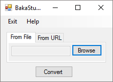

BakaTsuki Extractor
Download the chapter and images from pages Baka-Tsuki without the page layout to be read anytime. Baka-Tsuki is a site that provide translation of light novels.
Baka-Tsuki.org is a site that provide translation of light novels.
Download 1.2
Source code at GitHub
Status and Download
This program is discontinued, if not work as you want i recomend the use of Baka-Tsuki Official ePUB Generator Extension for Chrome.
Notes
Created using C# with .NET Framework 4.6.1 for Windows The "from file" option does not work well since the substitution of Regular Expression approach for an Xml approach in "Refatored BakaTsuki class" commit (833dc72edfd7ab53d5b5e4c0fc748f195f3b5b6a).
blog comments powered by Disqus